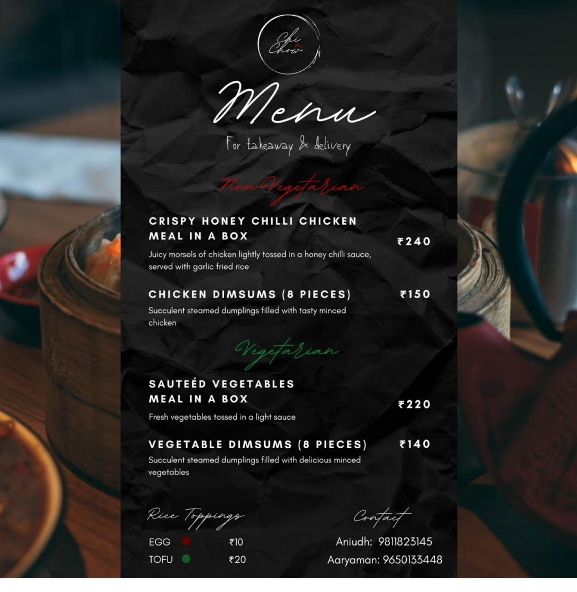

I'm Aaryaman Ahluwalia — I've spent the last few years moving between analytics and marketing seats, usually both at once. Give me a messy dataset and a business question, and I'll find the story in it, then build the thing that acts on it.
I got here by accident, a little bit. At 19 I started a food business out of pure curiosity about whether people would pay for what I was making — they did, and it taught me more about pricing, demand, and operations than any course could.
Since then I've worked the finance side (KPI dashboards, variance analysis, forecasting) and the growth side (attribution modeling, funnel analysis, campaign ROI) — often on the same team, sometimes in the same week. That range is on purpose: I'd rather stay useful across both than specialize too early into just one.
I graduated from Waterloo, I'm now based in New Delhi, and I'm actively figuring out what's next. Wherever that lands, the habit stays the same — find the signal in the noise, then actually do something about it.
Four things that are true about me, regardless of the job title.
Two things built to show the work, not just describe it.
A real Pan-Asian delivery brand I co-founded and ran for a semester — not a class project, an actual business with real customers.
Chi & Chow was a Pan-Asian takeaway-and-delivery brand I built with my friend Anirudh in 2020 — full branding, a real priced menu, and orders taken over WhatsApp and Instagram. We split everything 50/50: sourcing, cooking, pricing, marketing, and the delivery logistics behind all of it.
Four months in, it was profitable and getting franchise interest from other cities — not bad for something we ran out of a home kitchen. It wound down when it was time to leave for university, but it's where I first learned that a good idea only matters if the unit economics actually work.

An interactive KPI dashboard inspired by the operations and root-cause work at The Corner House.
Built to demonstrate the same KPI tracking and root-cause thinking behind the work at The Corner House, on a synthetic 19-month dataset for a homestay villa. Click any marked month on the RevPAR trend and it opens a live variance decomposition — occupancy, pricing, and channel-mix effects broken out the way an operator would actually diagnose a swing, not just report it.
Three of the marked months are dips worth investigating, two are gains worth understanding — including one that closes the loop on the very first anomaly a year later.
Open to analyst, growth, and marketing-ops roles — and genuinely happy to talk through any of the three.